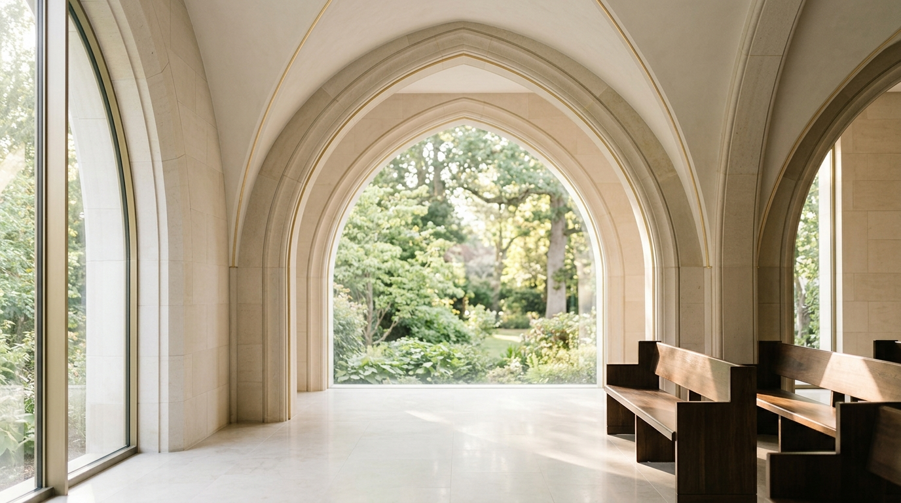

Almanya'da Vefat Durumunda Hürmet ve İtimatla Yanınızdayız.
Vefatın gerçekleştiği ilk andan Türkiye'deki ebedi istirahatgâhına varıncaya dek; dini vecibeler, resmi Alman ve Konsolosluk evrakları, özel hava yolu transferi ile köy mezarlığına kadar defin sürecini noksansız üstleniyoruz.
Vefat anında panik yapmadan bizi hemen arayabilirsiniz. Nöbetçi uzmanımız hastane, ev veya huzurevi nakil sürecini derhal başlatır.
Vefat Anında Ne Yapılmalı?
Beklenmedik bir kayıp anında sakin kalarak ilk adımları doğru atmak hayati önem taşır. Geri kalan tüm Alman bürokrasisi ve dini süreçleri biz devralıyoruz.
Doktor Çağrılması & Totenschein
Vefat evde gerçekleştiyse vakit kaybetmeden aile hekimi veya acil doktoru (112 / 116 117) çağrılarak resmi ölüm belgesi (Todesbescheinigung) düzenletilmelidir. Hastanede gerçekleştiyse bu belge hastane hekimi tarafından hazırlanır.
Ümmet Cenaze 7/24 Hattını Arayın
0711 / 99 88 77 66 numaralı acil hattımızı aradığınız anda özel klimalı cenaze nakil aracımız en geç 60 dakika içinde Stuttgart ve Baden-Württemberg sınırları içerisinde yola çıkar.
Evrak Teslimi & Tam Yetkilendirme
Merhumun kimlik/pasaportu ve varsa cenaze fonu kartını ekibimize teslim etmeniz yeterlidir. Alman Nüfus İdaresi (Standesamt), Konsolosluk Leichenpass ve gümrük tahliye mühürlerini biz tamamlarız.
Uçtan Uca 6 Aşamalı Hizmet Akışımız
Emanetinizin ilk teslim alınışından ebedi istirahatgâhındaki kabir başında duanın yapılışına kadar her safha dini hassasiyetle yönetilir.
Adresten / Hastaneden Teslim
Hastaneler, yaşlı bakım merkezleri veya hanelerden mevzuata uygun soğutmalı transfer aracımızla merhumun büyük bir hürmetle gasilhanemize nakli.
İslami Gasil, Tekfin ve Helallik
Ehli sünnet itikadına uygun tecrübeli bay/bayan din görevlileri eşliğinde yıkama, kefenleme, koku sürülmesi ve aile eşliğinde cenaze namazı & helallik merasimi.
Resmi Standesamt & Konsolosluk
Alman Nüfus Dairesi'nden ölüm sicili (Sterbeurkunde), T.C. Stuttgart Başkonsolosluğu'ndan Cenaze Nakil İzin Belgesi (Leichenpass) ve mühürlü gümrük onayları.
Hermetik Çinko Tabut & Mühür
Uluslararası IATA ve Berlin Anlaşması standartlarına tam uyumlu, sızdırmaz lehimli çinko iç tabut ve asil ahşap dış tabutlama işlemi.
THY Tarifeli Uçuş ile Nakil
Stuttgart Havalimanı (STR) veya Frankfurt (FRA) gümrük kapısından Türk Hava Yolları kargo ambarına teslim, Türkiye'deki en yakın havalimanına direkt uçuş koordinasyonu.
Memlekette Karşılama & Köy Defni
Türkiye'deki havalimanında özel cenaze aracımızla karşılama; Türkiye'nin 81 ilinde ilçe, bucak veya köy mezarlığındaki kabir alanına kadar nakil ve defin refakati.
İhtiyacınıza Uygun Cenaze Çözümleri

Türkiye'ye Uçakla Cenaze Nakli
Almanya'dan Türkiye'nin herhangi bir il, ilçe veya köyüne kadar eksiksiz transfer. Stuttgart, Frankfurt veya Münih havalimanlarından doğrudan THY Kargo tarifeli uçaklarıyla hızlı ve güvenli nakil gerçekleştiriyoruz.
İslami Usullere Göre Gasil & Tekfin
Modern ve hijyenik gasilhanemizde merhumun cinsiyetine göre ehliyetli hocalarımız nezaretinde farz ve sünnetlere harfiyen riayet edilerek yıkama ve kefenleme yapılır.
Almanya İçi İslami Defin (Baden-Württemberg)
Stuttgart Pragfriedhof, Dornhaldenfriedhof, Mannheim, Karlsruhe ve çevre şehirlerdeki İslami mezarlık parsellerinde kıble yönü tayini, kefenle defin izinleri ve kabir yeri tahsisi.
DİTİB, İGMG, Türk Federasyon & Sterbekasse Fonları
Merhumun veya aile fertlerinin cenaze yardımlaşma fonu (Sterbekasse) üyeliği varsa, tüm mali faturalandırma ve masraf mahsuplaşmasını doğrudan fon merkezleriyle yürütüyoruz. Aile hiçbir ön ödeme yapmadan hizmet alır.
Konsolosluk & Fon Akreditasyonlarımız
Ümmet Cenaze Hizmetleri, T.C. Stuttgart Başkonsolosluğu, Baden-Württemberg Eyaleti Sağlık Daireleri (Gesundheitsamt) ve Türk Hava Yolları Kargo Başkanlığı nezdinde tam akredite ve imtiyazlı cenaze nakil kuruluşudur.
Stuttgart Merkezli, Tüm Eyalete 60 Dakika Mesafedeyiz
Nöbetçi transfer filomuz ve bölge temsilcilerimiz ile vefat haberini aldığımız an bulunduğunuz şehre intikal ediyoruz.
Hauptstätter Str. 120, 70178 Stuttgart (Baden-Württemberg)